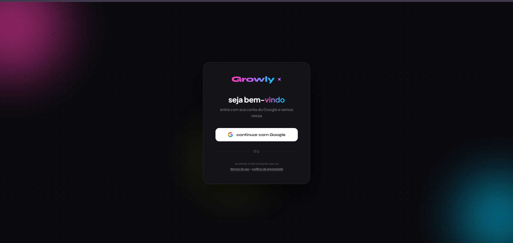
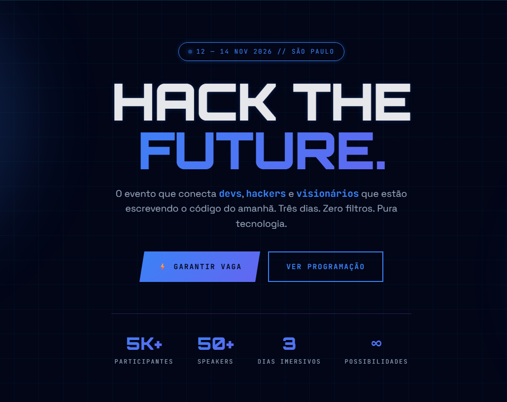

Sou o Guilherme, estudante de Ciência da Computação e desenvolvedor Python. Minha primeira experiência com automação foi dentro de um escritório de contabilidade, onde vi processos manuais tomando horas do time, e percebi que dava pra resolver boa parte disso com código. De lá pra cá venho me aprofundando em backend, APIs e IA aplicada, sempre com o mesmo foco: transformar tarefas repetitivas em soluções automáticas.
Acredito mais em código funcionando do que em teoria: gosto de construir projetos completos, testar, errar e ajustar até funcionar de verdade. Hoje busco uma oportunidade de estágio para levar essa forma de trabalhar para um time real.
class Guilherme: def __init__(self): self.nome = "Guilherme Fidencio" self.formacao = "Ciência da Computação" self.foco = ["Python", "Flask", "Automação"] self.objetivo = "Estágio em desenvolvimento" self.status = "Disponível" def contato(self): return "vamos conversar?"

Plataforma voltada para análise de métricas do Instagram, utilizando Python, APIs e Inteligência Artificial. O Growly automatiza a coleta e análise de dados, identifica padrões de crescimento e engajamento e gera insights estratégicos para criadores de conteúdo e profissionais de marketing. Contou com validação da proposta junto a usuários e foi estruturado pensando em escalabilidade.

Landing page responsiva para uma feira fictícia de tecnologia, desenvolvida como projeto acadêmico. Apresenta informações sobre o evento, programação, palestrantes, workshops, networking e inscrições, além de um chatbot integrado com Inteligência Artificial para interação e suporte aos visitantes. Foco em experiência do usuário, design responsivo e funcionalidades dinâmicas.
Aplicação web em Python e Flask que recebe uma URL do YouTube e processa o conteúdo automaticamente para gerar um relatório em PDF. Utiliza processamento em segundo plano com threads, permitindo executar tarefas demoradas sem bloquear a aplicação. Desenvolvido para praticar backend, automação, processamento assíncrono e geração de arquivos.